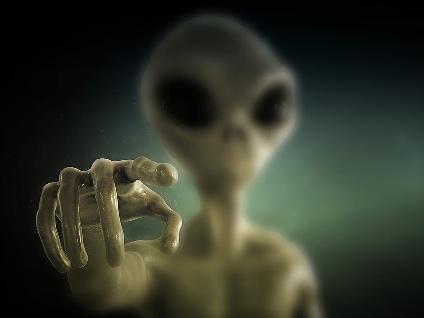

Unveiling the Alien Enigma 👽
👽Who or What Are Aliens?
Aliens, or extraterrestrial life forms, are life that originates outside
Earth. They could range from simple microbes to highly intelligent
civilizations with advanced technology.
🔭Scientific Search (SETI & NASA)
-
SETI (Search for Extraterrestrial Intelligence) uses radio telescopes to
scan space for signals from intelligent life.
-
NASA and ESA explore planets and moons like Mars, Europa, and Enceladus
that might harbor microbial life.
-
James Webb Space Telescope is analyzing atmospheres of exoplanets for
biosignatures (signs of life).
🛸UFOs and UAPs
- UFO = Unidentified Flying Object
-
UAP = Unidentified Aerial Phenomena (new term used by military &
government)
-
The Pentagon and other agencies have declassified some UAP footage, but
no confirmed alien origin yet.
🌌The Fermi Paradox
- We’re alone (rare life)
- They’re avoiding us (Zoo Hypothesis)
- We’re not advanced enough to detect them
- Civilizations self-destruct before exploring space
🪐Where Could They Be?
-
Exoplanets in the habitable zone (Goldilocks zone) of their stars.
- Mars – once had water, possible microbial life.
- Europa & Enceladus – icy moons with subsurface oceans.
🎬 In Pop Culture
From E.T. and Men in Black to Interstellar and Arrival, aliens have
captured our imagination in books, movies, and games.
Silent Eyes in the Sky (POEM)
And if there are
angels in the gables
of the heavens, they have
kept their distance,
observing us as one
might a struggling species
in a glass case.
"Aliens" by R.S. Thomas
Click the image to Know more About me
